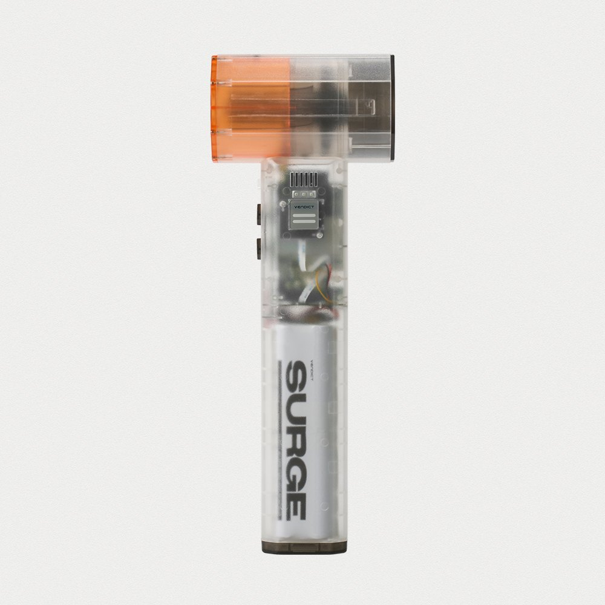
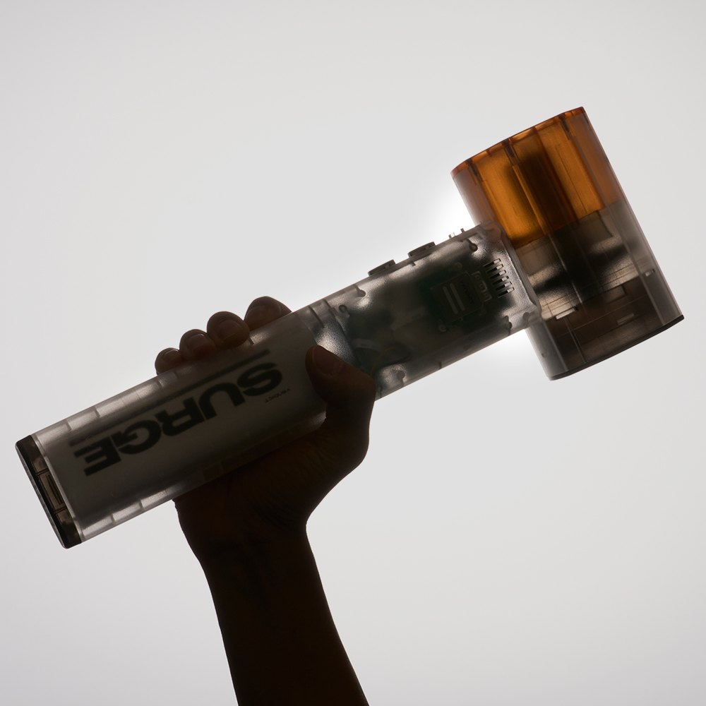
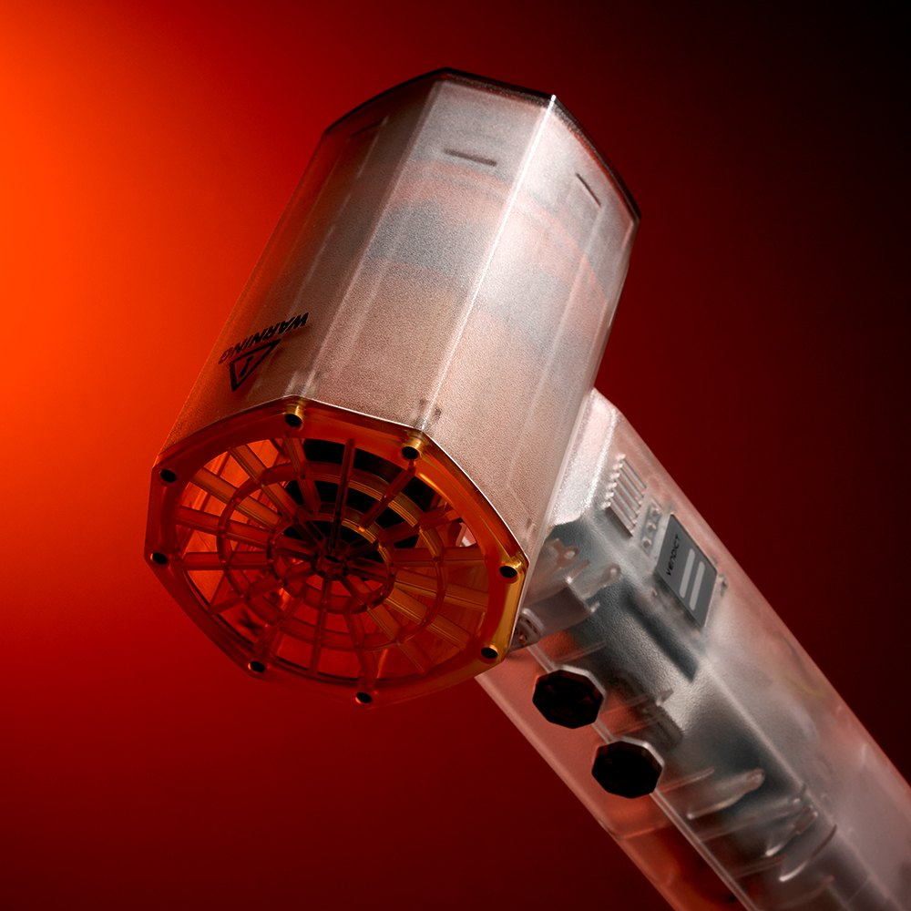
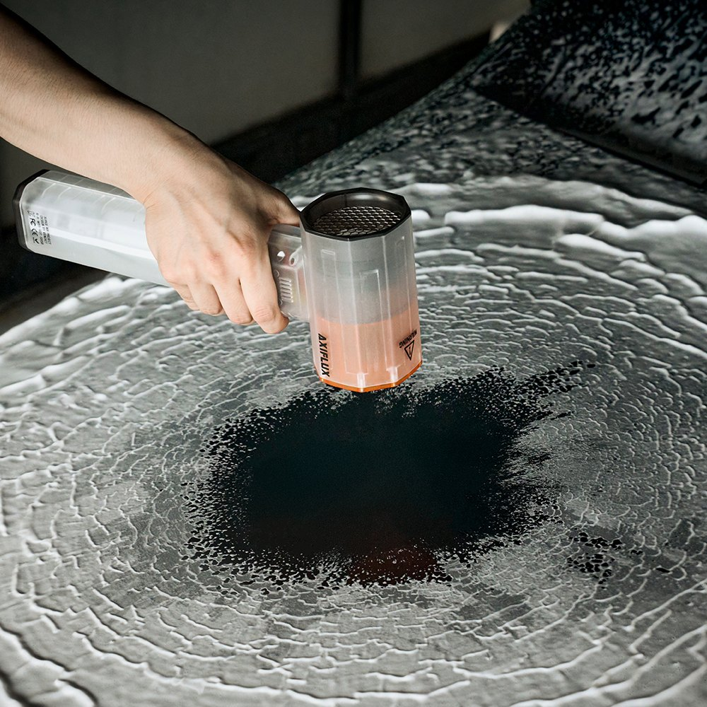

VENDICT SURGE Cordless Air Blower Review at a Glance
This VENDICT SURGE Cordless Air Blower review looks at a Korean gadget that's become popular with car-wash fans: a handheld jet blower that dries your car without towels. VENDICT (벤딕트) launched the SURGE (VDT-S64B) in August 2025 with a 750W brushless motor, a 64mm fan and a see-through body with an orange hood.
Towel-drying can drag grit across paint and leaves water in mirrors, grilles and wheel nuts. A strong blower pushes that water out without touching the surface. Here's how the SURGE performs on paper and in daily use.

Design: Transparent Body, Laminar-Flow Hood
The clear PC+ABS shell shows the cells, board and fan inside. The orange hood is a laminar-flow nozzle that VENDICT says reduces turbulence and noise. The fan is 64mm, about 20% larger than the brand's earlier model, and there's an aluminum heat sink plus a small LED light for dark garages.


Key Specs
| Spec | VENDICT SURGE (VDT-S64B) |
|---|---|
| Motor / fan | 750W BLDC brushless · 64mm fan |
| Thrust | 4 levels, about 160g to 1,200g |
| Battery | 21.6V · 3,950mAh × 6 (EVE 21700 cells) · 87.7Wh · BMS |
| Charging | USB-C PD up to 40W · about 3 hours · can't run while charging |
| Size / weight | 334 × 122 × 73mm · 940g |
| Body | PC+ABS, transparent · not water- or dust-proof |
| Extras | Aluminum heat sink · LED light |
| Korean price | ₩159,000 list · Costco Korea set with pouch ₩152,900 |
| Warranty | 1 year (made in China for the Korean brand) |
Power Levels and Real Runtime
| Level | Runtime (approx.) | Notes |
|---|---|---|
| 1 | 60 min | Gentle, for dust and light drying |
| 2 | 28 min | Steps down after ~4 min of peak to protect the motor |
| 3 | 20 min | Steps down after ~60 s of peak |
| Turbo | 16 min | Full blast for ~20 s, then steps down |
The step-down is a thermal-protection feature: short bursts are strong, then output eases off. For a full car, most people use level 2 for panels and tap turbo for mirrors, grilles and wheels.


Photo note: These are the 5 real product photos from the Korean listing. We didn't add any AI-generated images.
Cordless Blower vs. Towels vs. Compressed Air
| Cordless Air Blower | Microfiber Towels | Compressed Air / Leaf Blower | |
|---|---|---|---|
| Touches paint | No | Yes | No |
| Gets water out of gaps | Yes | Poorly | Yes |
| Portability | Very high | Very high | Low |
| Noise | Moderate | None | High |
| Cost | Medium | Low | Medium–high |
Pros & Cons
✅ Pros
- 750W brushless motor with up to ~1,200g thrust.
- Big 87.7Wh battery with USB-C PD charging.
- Touch-free drying that clears mirrors, grilles and wheels.
- Light (940g) with a cool transparent design and LED light.
⚠️ Cons
- Peak power steps down after short bursts.
- Not water- or dust-proof.
- Can't run while charging; case sold separately in the basic package.
- Korea-only, so not on US Amazon.
Who It Suits (and Who Should Skip It)
- Great for: Weekend car washers who want touch-free drying.
- Great for: Motorcycle and bike owners, PC dusting and camping (inflating mats).
- Maybe skip: If you need a weatherproof tool or all-day turbo power.
- Safety: Never aim it at people, pets or eyes.
VENDICT SURGE FAQ
What is the VENDICT SURGE?
It's a cordless handheld air blower (model VDT-S64B) from Korean brand VENDICT (벤딕트), released in August 2025. It uses a 750W brushless (BLDC) motor and a 64mm fan to push up to about 1,200g of thrust, mainly for drying cars and bikes after washing.
How long does the battery last?
The 21.6V, 87.7Wh pack (six 21700 cells) runs about 60 minutes on level 1, 28 minutes on level 2, 20 minutes on level 3 and 16 minutes on turbo. It charges over USB-C PD (up to 40W) in about 3 hours, and it can't run while charging.
Is it waterproof?
No. The body isn't water- or dust-proof. You can blow water off a wet car, but don't use it in rain or let it get soaked.
Can I buy it in the US?
It's sold in Korea and isn't listed on US Amazon, so we link to similar cordless brushless car-drying blowers on Amazon instead.
Cordless Brushless Car Dryer Blowers
The VENDICT SURGE is sold in Korea only. Browse similar cordless brushless air blowers for car drying on US Amazon.